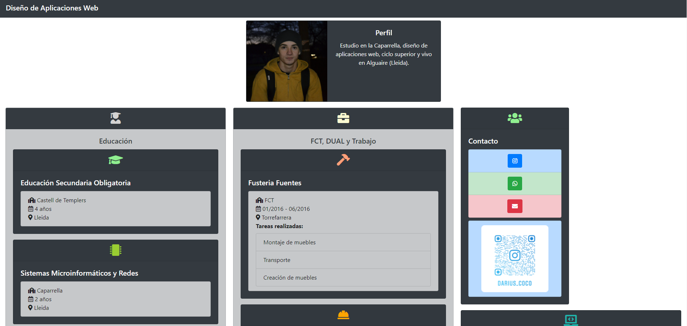

<div class="m-5">
    <div class="container-fluid row">

        <div class="col">
            <div class="text-center mb-5">
                <h2>Presentación de la Práctica 4 de Angular</h2>
            </div>

            <div id="carouselExampleIndicators" class="carousel slide" data-ride="carousel">
                <ol class="carousel-indicators">
                    <li data-target="#carouselExampleIndicators" data-slide-to="0" class="active"></li>
                    <li data-target="#carouselExampleIndicators" data-slide-to="1"></li>
                    <li data-target="#carouselExampleIndicators" data-slide-to="2"></li>
                </ol>
                <div class="carousel-inner active shadow p-3 mb-5 bg-dark rounded">
                    <div class="carousel-item active">
                        
                        <div class="mt-5 mb-5 text-white text-center">
                            <h4>Página del portfolio personal</h4>
                        </div>
                    </div>
                    <div class="carousel-item">
                        
                        <div class="mt-5 mb-5 text-white text-center">
                            <h4>Página donde se muestran los trabajos realizados</h4>
                        </div>
                    </div>
                    <div class="carousel-item">
                        
                        <div class="mt-5 mb-5 text-white text-center">
                            <h4>Página donde se administran los trabajos realizados</h4>
                        </div>
                    </div>
                </div>
            </div>
        </div>

        <div class="col">
            <h3>Enunciado de la práctica</h3>
            <p>Utilitzant el servei de base de dades que proporciona Firebase, creeu el vostre portfolio amb
                Angular i GitHub Pages.</p>
            <p><b>Opció bàsica (10 punts)
                Creeu dues aplicacions:</b></p>
            <li>Una us permetra veure el vostre portfolio i serà la que penjareu a GitHub Pages
                (PortfolioProject);</li>
            <li>I l’altra us permetrà gestionar el vostre portfolio per afegir-hi més contingut
                (PortfolioManagerProject)</li>

            <p><b>PortfolioProject ha de tenir el següent contingut:</b>
            <li>Una pàgina principal</li>
            <li>Una pàgina amb el vostre currículum</li>
            <li>Les diferents pàgines que mostren les vostres pràctiques (poden ser només les pràctiques</li>
            d’MP14, però també podeu fer diferents categories, o tags, per presentar les pràctiques
            d’altres mòduls.
            </p>
            <p>
            <b>Per aconseguir-ho, haureu d’utilitzar:</b><br>
            1. El servei de bases de dades de Firebase<br>
            2. Routing i subrouting (segons us convingui)<br>
            3. Bootstrap<br>
            4. GitHub Pages (consulteu el vídeo enllaçat)<br>
            <p>Penseu que és la vostra pròpia pàgina i, per tant, heu de fer uns bons estils que us representin.
            PortfolioManagerProject
            Ha de tenir les següents funcionalitats
             Pujar noves pràctiques a la BD de Firebase: ho aconseguireu a través d’un formulari que
            us permeti introduir la informació del vostre portfolio i guardar-la a la base de dades de
            Firebase
            </p>
            <li>OPCIONAL. Modificar pràctiques ja existents a la BD de Firebase.</li>
            <b>Per aconseguir-ho, haureu d’utilitzar:</b><br>
            1. El servei de bases de dades de Firebase<br>
            2. Routing i subrouting (si us convé)<br>
            3. Bootstrap<br>
            4. OPCIONAL. Un editor de text online (CKEditor o TinyCloud)<br>

        </div>

    </div>
</div>